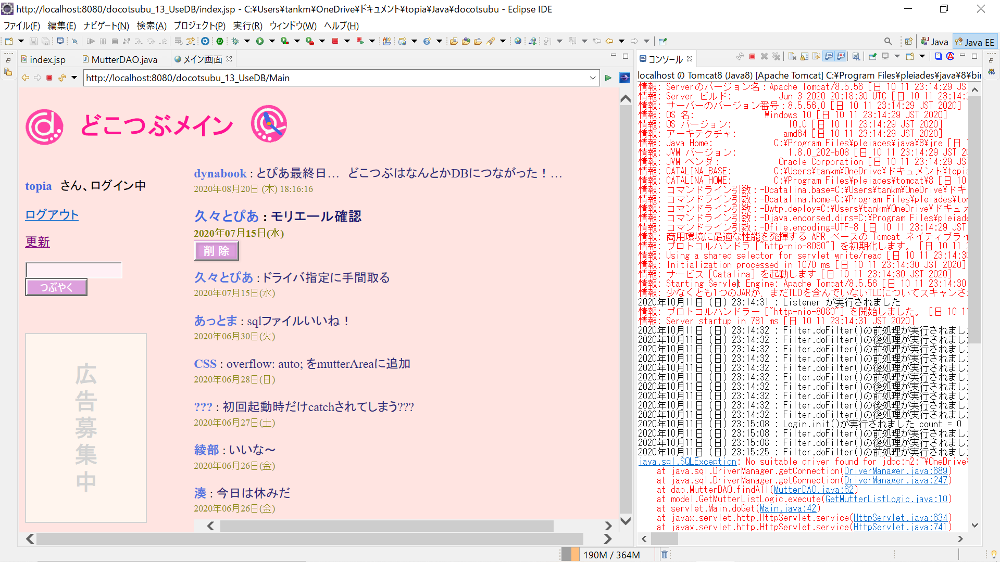
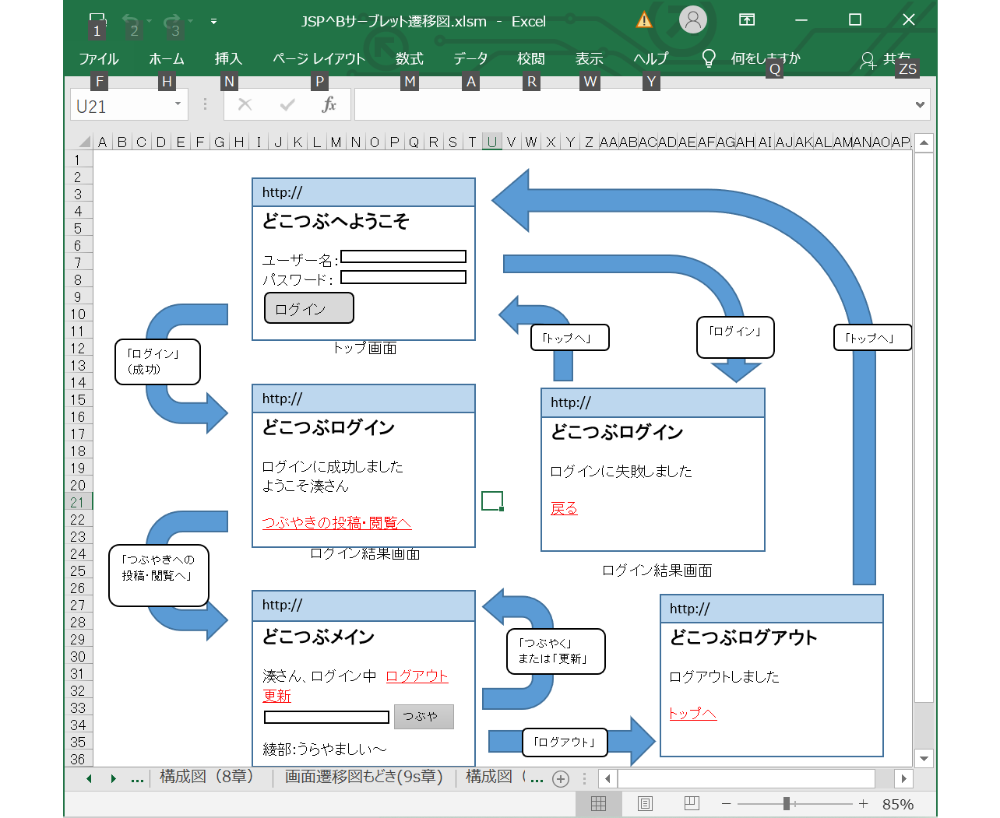
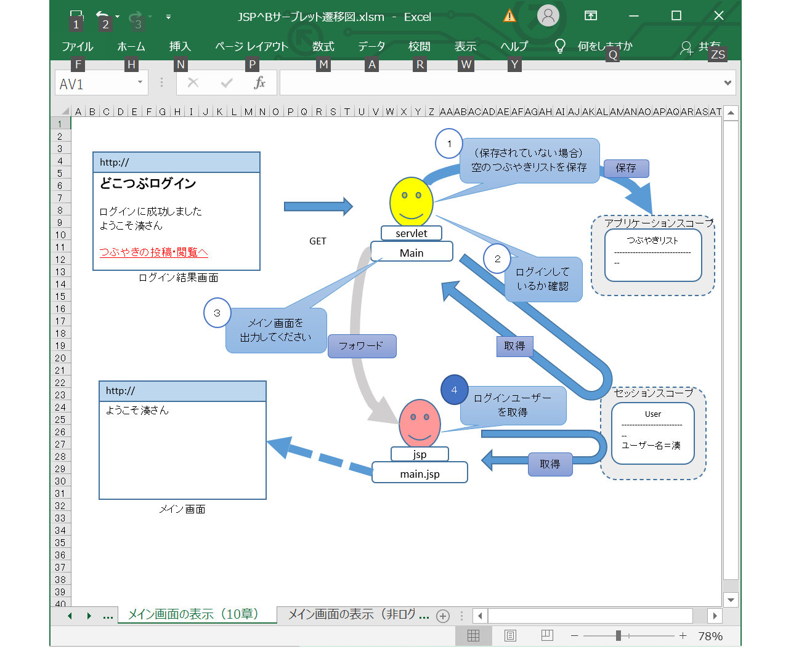

Mutter APP

 
作品プロフィール
使用言語：JavaEE(サーブレット・JSP)
開発環境：eclipse
データベース：H2 Database
概要：
訓練校で「スッキリわかる サーブレット＆JSP入門」を基に、つぶやきアプリ「どこつぶ」を作成しました。
ログイン/ログアウト、MVCモデル、データーベースへの接続、DAOパターンなど、WEBアプリの仕組みを学びました。
画面遷移図やプロセスフロー図なども作成しています。
テキストにはないつぶやきの削除機能も実装しました。
現在はMUTTERテーブルだけですが、いずれUSERテーブルも作成してユーザー管理機能も実装したいです。